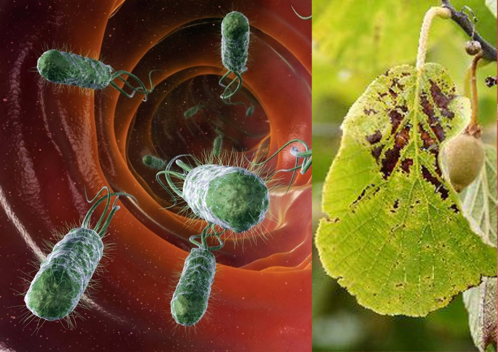
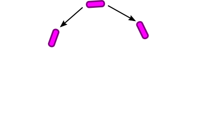
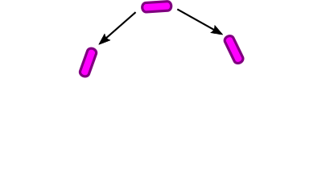
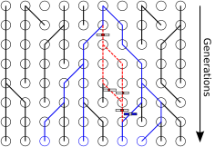
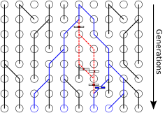
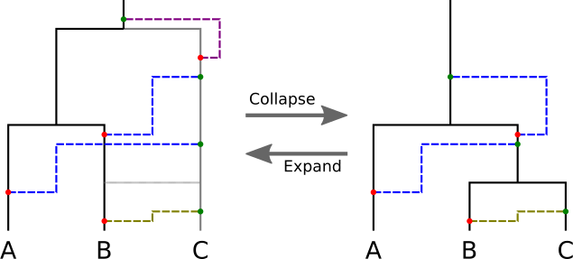
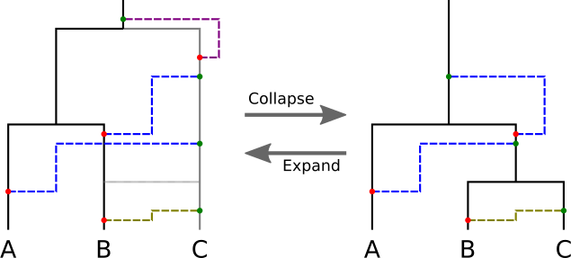
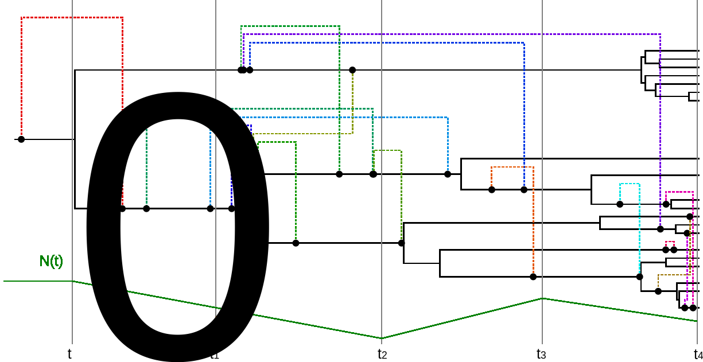
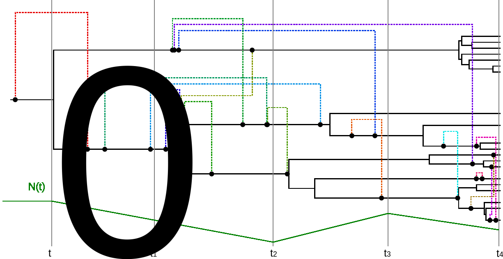

Why study bacterial phylogenetics?
- Bacteria play important roles (both positive and negative) in the health of animals and plants.
- Many bacteria possess interesting and experimentally accessible evolutionary dynamics.
- Bacterial genomes are measurably evolving over
relatively short study periods.
Drummond & Rambaut, TIEE (2003)


Rainey & Travisano, Nature (1998)
 



 



 



 
